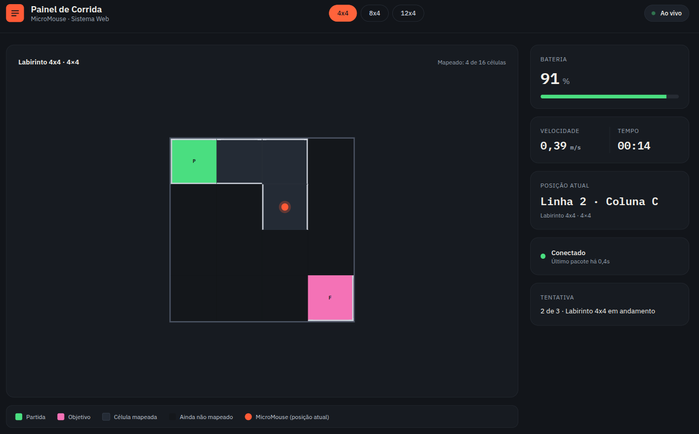
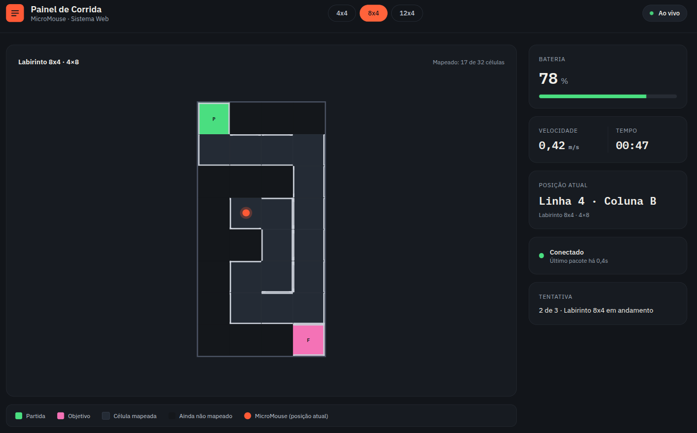
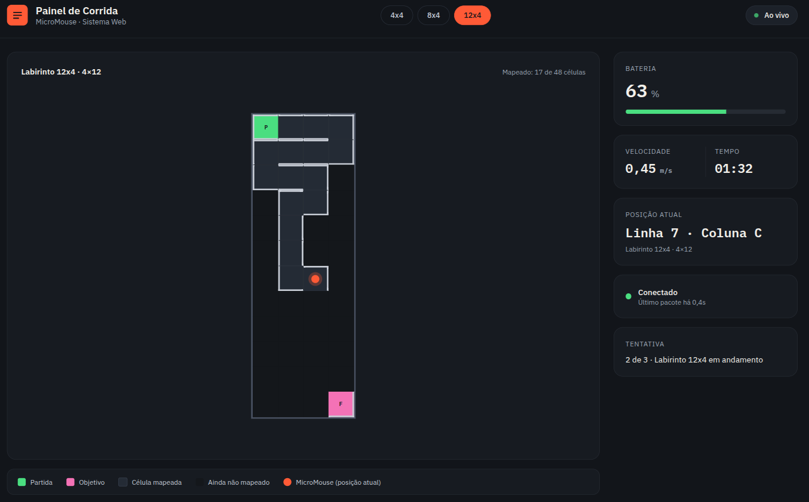
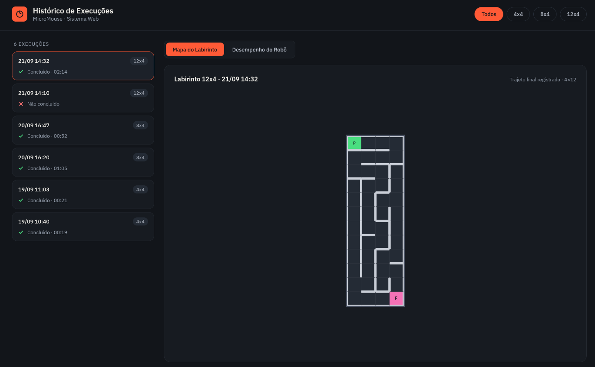
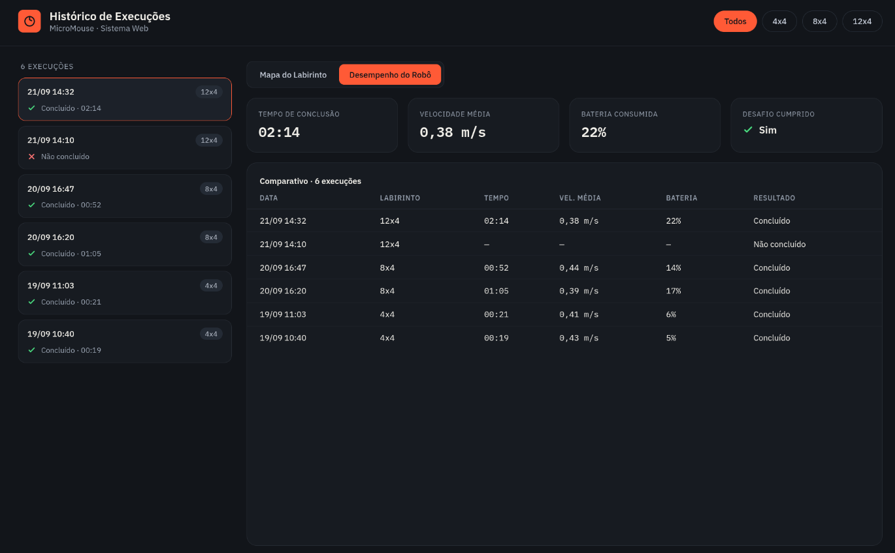
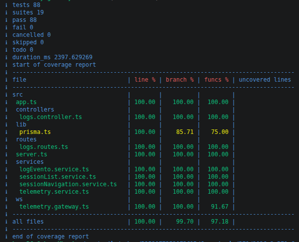
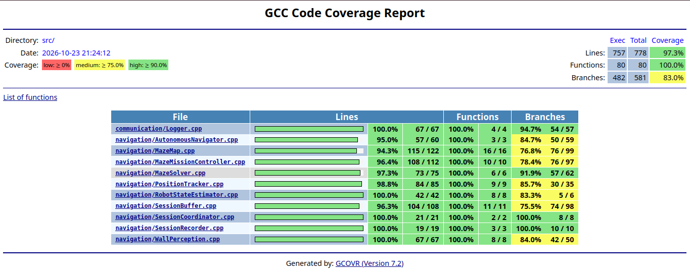

7.4 — Testes de software¶
Objetivo e estratégia de testes¶
Os testes de software verificam as regras de negócio, a comunicação entre os componentes e os fluxos que o usuário executa pela interface. A estratégia combina testes unitários, testes de integração entre módulos e testes funcionais de ponta a ponta (end-to-end, E2E). Os testes de diagnóstico de hardware são documentados separadamente, pois exigem a ESP32 e componentes físicos.
A suíte do backend utiliza o executor de testes nativo do Node.js com TypeScript carregado por tsx. O firmware dispõe de um ambiente nativo do PlatformIO para executar testes no computador, sem gravar o programa na ESP32. Para a interface web, a suíte E2E utiliza Playwright Test com TypeScript.
Histórias de usuário, protótipos e casos funcionais¶
A tabela relaciona as histórias de usuário de software com os protótipos disponíveis e com os cenários E2E implementados.
| História de usuário | Protótipo relacionado | Casos funcionais E2E |
|---|---|---|
| HU-08 — Exibição dos dados estruturais e do mapa do labirinto. | Painel da corrida com labirintos 4×4, 8×4 e 12×4, apresentados nas figuras abaixo. | dashboard.spec.ts: abertura do painel, seleção do tamanho do labirinto e reinício. simulacao.spec.ts: apresentação e evolução do mapa no modo de simulação. |
| HU-09 — Exibição das informações de status e telemetria do robô. | Painel da corrida, com indicadores e informações do estado do robô. | simulacao.spec.ts: estado e indicadores exibidos. telemetria.spec.ts: atualização da interface a partir de mensagens WebSocket controladas. |
| HU-10 — Transmissão de dados de bordo para o dashboard. | Painel da corrida com o mapa e os indicadores atualizados. | telemetria.spec.ts: recepção e interpretação de mensagens WebSocket. integracao.spec.ts: envio de mensagens de teste ao backend e verificação da informação apresentada na interface. |
| HU-11 — Armazenamento das informações de navegação. | Protótipos do histórico e do trajeto da execução. | historico.spec.ts: consulta de sessão e pontos do trajeto. integracao.spec.ts: verificação dos dados persistidos no banco e recuperados pela aplicação. |
| HU-12 — Histórico de sessões, eventos e diagnósticos. | Protótipos do histórico de execuções e de desempenho. | historico.spec.ts: listagem de sessões e filtro de eventos por severidade. integracao.spec.ts: consulta de sessão, evento e percurso persistidos. |
Protótipos da interface¶
HU-08 e HU-09 — Painel da corrida

Figura 1 — Protótipo do painel da corrida para labirinto 4×4.

Figura 2 — Protótipo do painel da corrida para labirinto 8×4.

Figura 3 — Protótipo do painel da corrida para labirinto 12×4.
HU-11 e HU-12 — Histórico de execuções

Figura 4 — Protótipo do histórico de execuções e do trajeto no mapa.

Figura 5 — Protótipo do histórico de execuções e indicadores de desempenho.
Testes unitários e de integração do backend¶
Os testes do backend estão em src/backend/src/ e usam node:test/node:assert por meio de TypeScript carregado com tsx. Os testes verificam os serviços de domínio, controladores, rotas HTTP, inicialização da aplicação e do servidor, a fábrica do Prisma e o gateway WebSocket. Em diferentes testes, as dependências de persistência ou serviços são substituídas por doubles/fakes; portanto, nem todos os testes se conectam a um PostgreSQL real.
| Arquivo de teste | Escopo principal |
|---|---|
src/__tests__/app.test.ts |
Health check, CORS, montagem de rotas e ordem dos middlewares. |
src/__tests__/server.test.ts |
Configuração da porta, inicialização HTTP/WebSocket e tratamento de falhas de criação da conexão de banco. |
lib/__tests__/prisma.test.ts |
Comportamento da fábrica/instância de Prisma. |
routes/__tests__/logs.routes.test.ts |
Encaminhamento dos endpoints para os serviços e validação de identificadores. |
controllers/__tests__/logs.controller.test.ts |
Respostas dos controladores, validação e tratamento de erros nas operações de sessões, percurso e eventos. |
services/__tests__/sessionList.service.test.ts |
Consulta e transformação da lista de sessões. |
services/__tests__/sessionNavigation.service.test.ts |
Criação e finalização de sessões, validações e persistência/consulta dos pontos do trajeto, com dependências controladas nos testes. |
services/__tests__/logEvento.service.test.ts |
Validação e registro de eventos de diagnóstico. |
services/__tests__/telemetry.service.test.ts |
Validação e processamento de mensagens de telemetria, mapa, posição e sessão. |
ws/__tests__/telemetry.gateway.test.ts |
Conexões WebSocket, identificação do papel do cliente, validação de mensagens, retransmissão, snapshots e erros do gateway. |
Como executar os testes do backend¶
Na pasta src/backend:
npm test
Esse comando executa a suíte definida no package.json. Para executar os testes de cobertura descritos na seção abaixo, utilize npm run test:coverage.
Testes unitários e de integração do firmware¶
O firmware configura o ambiente [env:native] em src/firmware/platformio.ini. Esse ambiente compila os módulos selecionados para execução nativa no computador, usando testes automatizados com dependências de sensores, transporte e armazenamento simuladas quando aplicável. Ele permite validar regras de navegação e integração entre módulos, mas não substitui os testes físicos com a ESP32.
Suíte em src/firmware/test/ |
Escopo principal |
|---|---|
test_maze_map |
Inicialização do mapa, dimensões válidas e representação das células/paredes. |
test_maze_solver |
Resolução do labirinto e cálculo de caminhos para diferentes configurações. |
test_autonomous_navigator |
Integração entre mapa, solucionador e navegação autônoma. |
test_maze_mission_controller |
Coordenação da missão e interação com componentes de navegação e rastreamento. |
test_position_tracker |
Atualização da posição/orientação com leitores de odometria e orientação substituíveis por mocks. |
test_wall_perception |
Interpretação das leituras dos sensores de parede. |
test_robot_state_estimator |
Estimativa e atualização do estado do robô a partir de dados de entrada de teste. |
test_logger |
Geração e encaminhamento de registros usando transporte de log de teste. |
test_session_buffer |
Bufferização dos dados da sessão e gestão dos dados pendentes. |
test_session_recorder |
Registro dos metadados e dos pontos do percurso. |
test_session_coordinator |
Coordenação da sessão, registro e integração com logger/armazenamento substituíveis. |
test_tracking_adapter |
Adaptação das interfaces de rastreamento utilizadas pelos demais módulos. |
Como executar os testes do firmware¶
Na pasta src/firmware:
pio test -e native
O filtro test_filter do ambiente native define as suítes listadas acima. Uma execução bem-sucedida indica que os testes nativos selecionados passaram; não comprova, por si só, o funcionamento elétrico dos sensores, motores ou da comunicação Wi-Fi na placa física.
Diagnósticos de hardware¶
Os projetos independentes em src/firmwareTest/ destinam-se à verificação de componentes físicos com a ESP32 para os testes de Hardware. Esses diagnósticos são executados separadamente, podem exigir ação do operador e não fazem parte da cobertura esperada para os testes de Software. Os resultados dependem das conexões, da alimentação e do hardware disponível durante a execução.
Cobertura de código (coverage)¶
As imagens abaixo registram os relatórios de cobertura produzidos para os módulos testados. A cobertura indica a parte do código executada durante os testes e deve ser interpretada junto com os cenários e as asserções; não garante, isoladamente, a ausência de defeitos.
Cobertura do backend¶

Figura 6 — Captura do relatório de cobertura do backend.
O relatório do backend é produzido pelo script src/backend/scripts/test-coverage.sh, executado pelo comando npm run test:coverage. O script utiliza o recurso de cobertura do executor nativo do Node.js (--experimental-test-coverage) e carrega os arquivos TypeScript por meio de tsx. Para cada alvo, executa os testes correspondentes, inclui o arquivo de implementação medido e exclui arquivos de teste do cálculo.
Para reproduzir o relatório/validação:
cd src/backend
npm run test:coverage
Cobertura do firmware¶

Figura 7 — Captura do relatório de cobertura do firmware.
A cobertura do firmware é coletada no ambiente nativo do PlatformIO. Em src/firmware/platformio.ini, o ambiente [env:native] habilita a instrumentação do compilador com --coverage e -lgcov, além de símbolos de depuração (-g) e otimização desativada (-O0) para facilitar a medição. A execução dos testes gera os dados de execução usados pelo GCC/gcov; o relatório HTML versionado em src/firmware/coverage.html identifica o gcovr 7.2 como gerador do relatório detalhado.
Para reproduzir a execução dos testes que alimentam a cobertura:
cd src/firmware
pio test -e native
Após executar os testes instrumentados, o gcovr pode processar os dados gerados e atualizar o relatório HTML, conforme as opções do ambiente de desenvolvimento. A figura CoverageFirmware.png registra visualmente esse resultado. A cobertura abrange os arquivos incluídos pelo filtro de compilação do ambiente native; não representa a cobertura de todo o firmware embarcado nem dos diagnósticos físicos em src/firmwareTest/.
Testes funcionais E2E da interface web¶
A suíte E2E fica em src/frontend/e2e/ e utiliza Playwright Test com TypeScript. Os cenários padrão substituem respostas HTTP e mensagens WebSocket por dados controlados, para permitir execuções repetíveis sem um robô físico ou banco de dados preenchido previamente.
| Arquivo/caso | Histórias/área | Verificações funcionais |
|---|---|---|
dashboard.spec.ts |
HU-08/HU-09 | Abertura do painel, seleção de labirintos 4×4/8×4/12×4, reinício e tratamento de indisponibilidade da API de sessões. |
simulacao.spec.ts |
HU-08/HU-09 | Execução simulada sem hardware, posição do robô e indicadores de bateria, rodas e PID. |
historico.spec.ts |
HU-11/HU-12 | Consulta da sessão, pontos do trajeto, filtro por severidade e retorno ao dashboard. |
telemetria.spec.ts |
HU-08/HU-09/HU-10 | Recepção de mensagens WebSocket controladas e atualização do mapa, do estado do robô e das métricas. |
integracao.spec.ts |
HU-10/HU-11/HU-12 | Cenário com backend e PostgreSQL reais: envio de dados de sessão/telemetria, persistência e consulta de eventos e pontos do percurso pela interface. |
Como executar os testes E2E¶
Na pasta src/frontend:
npm install
npx playwright install chromium
npm run test:e2e
Para executar pela interface interativa do Playwright:
npm run test:e2e:ui
O cenário com backend real deve ser executado somente com o backend iniciado, DATABASE_URL apontando para um PostgreSQL exclusivo de teste, Prisma Client gerado e migrações aplicadas:
npm run test:e2e:backend
Esse cenário cria registros persistentes e não deve ser executado contra banco de produção ou compartilhado. O Playwright pode produzir relatório HTML, screenshots, vídeo e trace de falhas conforme a configuração da suíte; esses artefatos devem ser preservados quando forem utilizados como evidência da execução.
Estado da validação: na última execução relatada de npm run test:e2e:backend, o teste de integração falhou porque a sessão permaneceu com status EM_ANDAMENTO, enquanto o caso esperava CONCLUIDO. Portanto, esse cenário ainda precisa ser corrigido/reexecutado antes de ser registrado como aprovado. Não se deve considerar a suíte E2E integralmente aprovada apenas porque os arquivos de teste e a configuração estão presentes.
Limitações e interpretação dos resultados¶
- Testes com mocks validam os componentes e seus contratos, mas não garantem que uma dependência real (como PostgreSQL, rede ou sensor físico) esteja configurada corretamente.
- A cobertura apresentada corresponde apenas aos módulos e arquivos instrumentados pelos respectivos scripts/configurações. Ela não equivale à cobertura total de todo o sistema.
- Os testes nativos do firmware não movimentam motores nem verificam as ligações elétricas reais. Para isso, devem ser utilizados os diagnósticos em
src/firmwareTest/e o roteiro de testes físicos. - O cenário E2E com backend e PostgreSQL reais só deve ser considerado aprovado após passar integralmente e ter seu relatório de execução preservado.